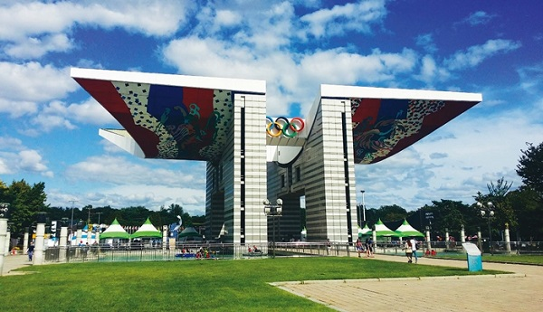
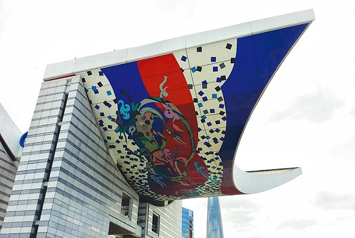

올림픽공원 평화의 문(1985)


올림픽공원의 상징적인 조형물이다. 이 때 즈음에 건강이 많이 약화되어 주된 구성원리만 짚어주고 거의 다른 실무자에 의해 설계되었다. 1차 당선 이후 기념성이 약하다는 비난이 일자, 정부는 86 아시안 게임 조형물 설계자인 조각가 김세중에게도 각기 다른 안을 제출하라고 하였다.
그래서 김중업은 이후 처음의 것을 엄청난 스케일로 확대시켜 무려 높이 90m의 안을 제출했다고 한다. 주위에서 모두가 만류하였지만 매우 쇠약한 상태에서도 그는 강력하게 밀어붙였다. 결국 높이 45m 등 여러가지 요소가 수정된 후 최종적으로 김중업의 안이 당선되었다.
형태는 평화를 상징하는 새인 비둘기가 날개를 편 모습을 본따서 만들었다. 앞에는 올림픽 엠블럼이 있으며 날개 부분의 천장에는 서양화가 백금남 성균관대 교수의 사신도가 그려져 있다.
평화의 문 인근에는 조각가 이승택씨의 작품인 '열주탈'이 둘러싸고 있다. 60여개의 기둥 위에 전통탈 형식을 현대적으로 재해석한 조각상을 만들어놓았다.